TortoiseGit
分类
开源版本库管理工具
推荐语
TortoiseGit 是基于 TortoiseSVN 的 Git 版本的 Windows Shell 界面。它是开源的，可以完全使用免费软件构建。TortoiseGit 支持你执行常规任务，例如 commit、显示日志、区分两个版本、创建分支和标签、创建补丁等。
工作中运用：从Github上克隆工程
右键菜单
查看用户名与邮箱
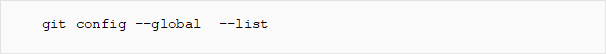
如果没配置
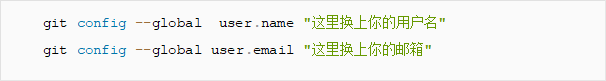
然后执行以下命令生成秘钥
ssh-keygen -t rsa -C "这里换上你的邮箱"
一直enter直至成功
进入github官网个人后台
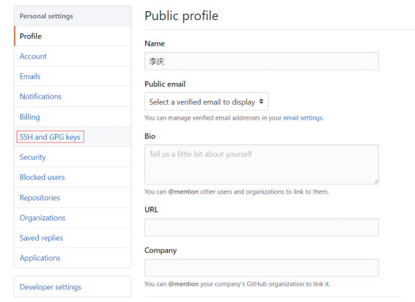
把id_rsa.pub文件内容复制进去
tortoisegit设置network
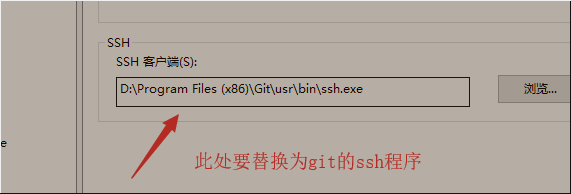
TexturePacker
分类
图集管理工具
推荐语
TexturePacker是一款把若干资源图片拼接为一张大图的合图工具，在游戏开发以及网页制作中经常会使用到这个工具。
TexturePacker不仅能帮助我们在加载图片时节省内存，它将很多小图拼接成一张大图后，合成的大图会比之前所有的散图所占用的物理存储更小，也许一堆散图的大小为20KB,将它们合成一张大图后可能就变成了10KB，这样便从而通过减小图片资源物理存储大小起到压缩游戏安装包的作用。将很多小图拼接成一张大图，载入内存时一次载入，提高了载入速度。
工作中运用：打包图集
在Unity中使用TexturePacker打包图集，导入TexturePacker-Unity的工程文件。
打开Unity内的Asset Store搜索“TexturePacker Importer”下载。（Window>General>Asset Store 或 快捷键Ctrl+9）
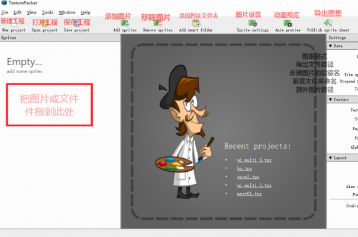
Visual Studio
分类
C#，C++代码编写IDE
推荐语
宇宙第一IDE，做游戏无论unity，UE，官方推荐编写脚本的IDE。方便编写C#，C++代码，代码提示，代码导航，代码调试都非常方便
工作运用：与Unity结合开发
unity中新建脚本，双击打开即可创建VS .sln 解决方案
C# 的 IntelliSense 和代码导航，在编写时使用 ".",会自动联想出成员变量等

附加到Unity调试
先在VS中点击附加到Unity调试，切换到Unity会询问是否对当前工程开始调试，选择是，点击三角启动程序，在VS中添加断点进行调试
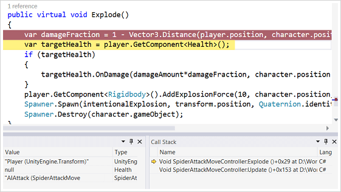
VSCode
分类
C#，Lua代码编写轻量级IDE
推荐语
运行时占用内存小，硬盘空间小，可以安装任意插件，具有几乎可支持任何编程语言的扩展。
工作运用：VSCode调试Lua
下载lua.exe
http://joedf.ahkscript.org/LuaBuilds/
配置在系统环境中
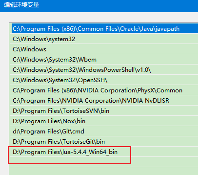
CMD查看Lua版本
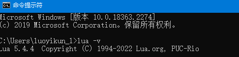
vscode安装插件
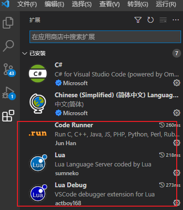
调试
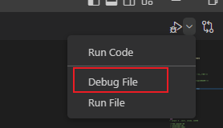
可以打断点查看效果
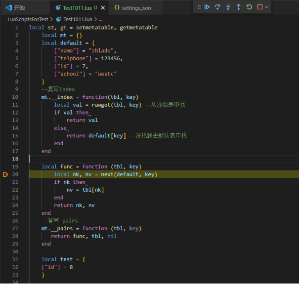
Unity3d
分类
2D/3D游戏开发引擎，采用C#编程
推荐语
Unity简单的用户界面是层级式的综合开发环境，具备视觉化编辑、详细的属性编辑器和动态的游戏预览特性。由于其强大的综合编辑特性，因此，Unity也被用来快速地制作游戏或者开发游戏原型。
工作运用：创建草地场景
1. 环境
使用HDRP 默认设置
2. 草地
1) 远景：3D object->新建 Plane->加上草地的贴图
2) 近景: Speedtree 中制作草->Export to Unity 3D-> 将草拖到unity 场景中，调节位置和大小
3. 大树
Speedtree 中制作树->Export to Unity 3D-> 将树拖到unity 场景中，调节位置和大小
4. 说明：
Speedtree 和Unity 无缝衔接，speedtree 中导出的树和草可以在unity 中直接使用。
如果想要做出树和草被风吹动的效果， 则需要
1) 从Speedtree 导出前打开 Tool ->Wind Wizard 选项
2) 导入 Unity 场景后，在3D object ->新建 Wind Zone 并启用
创建完成后场景效果
LuaPerfect
分类
Lua调试轻量化工具
推荐语
LuaPerfect是一款基于纯C++实现的独立的Lua调试工具：
1、接入方便：界面风格类似Visual Studio，符合VS用户习惯，非插件，接入自动化程度高，无需配置。
2、调试功能强大：稳定的基础调试功能，强大的表达式监视，悬浮监视，日志跳转，条件断点，Lua异常捕获，Lua反汇编等功能。还可以直接查看C#对象的各种成员，在Unity下还能列出组件列表和子物体列表。
3、调试性能高：调试密集Lua运算的游戏也不掉帧，因此特别适合调试游戏。
4、编辑功能强大：支持语法/语义代码高亮，自动API生成，语法检查，单词/语句自动完成，按语义跳转符号，代码格式化，类型推导，类型注解，全工程符号搜索，按语义重构等功能。
5、自带性能测试功能，测试密集Lua运算游戏的性能也不掉帧，因此结果更精确。
6、资源占用少：相对脚本化插件化的方案(IDEA,VSCode等)，同等功能下内存等资源仅同类软件的一半左右。
7、稳定流畅：运行稳定流畅，经过内部外部大型项目重度使用验证，得到非常高评价。
工作运用：调试Lua
LuaPerfect的调试原理是通过在游戏中通过require("LuaDebuggee")来加载LuaDebuggee.dll，并通过 LuaDebugee模块设置调试钩子，从而完成调试的功能。如下图所示：
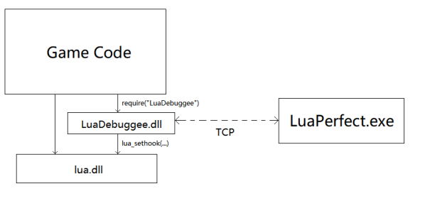
只需要在代码的入口处加上下面代码，即可使用调试
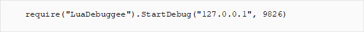
AndroidStudio
分类
Android开发IDE
推荐语
Android Studio 是谷歌推出的一个Android集成开发工具，基于IntelliJ IDEA. 类似 Eclipse ADT，Android Studio 提供了集成的 Android 开发工具用于开发和调试
工作运用：创建AAR
aar包是Android studio下打包android工程中src、res、lib后生成的aar文件，aar包导入其他android studio 工程后，其他工程可以方便引用源码和资源文件。下面介绍下如何
用android studio打开一个工程，然后新建一个Module，新建Module时候选择Android Library,后面按新建普通工程操作
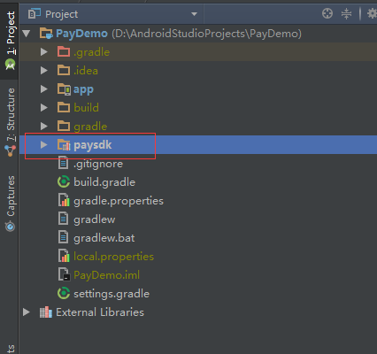
在新建的Module中编写完代码后，接下来编译整个工程后就会自动生成aar包，选中自己创建好的Module（我的就是paysdk）
点击菜单栏 Build里面的Make Module ‘xxx’ 如下图：
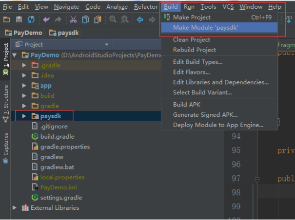
编译完成之后会在Module的build-->outputs-->aar-->xxxxx.aar 如图：
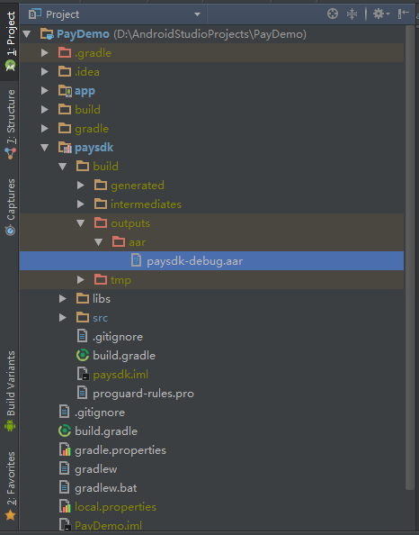
腾讯云CloudBase
分类
腾讯云提供的云原生一体化开发环境和工具平台
推荐语
在游戏需要服务器情况下，应用开发过程中繁琐的服务器搭建及运维费时费力。后来使用CloudBase，云端一体化开发多种端应用，使我可以专注于业务逻辑的实现，开发门槛更低，效率更高。
工作运用：CloudBase CLI工具使用方法
CloudBase CLI 是云开发（Tencent CloudBase，TCB）开源的命令行界面交互工具，用于帮助用户快速、方便的部署项目，管理云开发资源。下面使用CLI工具搭建个人博客
1、安装
首先检查自己电脑Windows系统有没有安装node.js环境，检查方法，按键盘上Win+R键，然后输入cmd调出命令行窗口，输入 node --version,然后有看到输出node.js版本号，即表示，有node.js环境。如果没有安装，就需要去node.js官网上去下载，建议选择 LTS 版本，版本必须为 8.6.0+。如下图
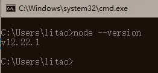
然后输入npm i -g @cloudbase/cli命令并回车，开始安装 CloudBase CLI 工具。安装结束后，使用tcb -v验证，结果有输出CloudBase CLi工具版本号，即表示安装成功。如下图
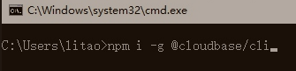
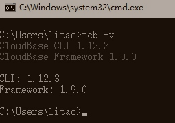
2、上传本地Hexo博客的内容
首次使用CloudBase CLI 工具时，需要用tcb login命令登录，然后在弹出的云开发授权页面中完成一个授权的动作，然后才能使用此工具的其它命令。如下图
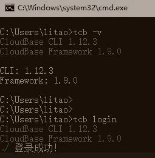
在本地Hexo博客，已经写好的文章内容，且已经用Hexo命令编译好后，文件都会存在hexo博客根目录下的public文件夹然后，我们用tcb命令来上传hexo更新的内容。我们需要在public目录下面执行这个命令。
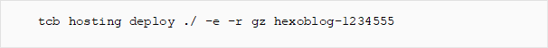
上述命令中gz，就是我们在创建云开发环境时，广州的拼音缩写，上海就是sh ，最后面一串字符，就是云开发环境ID，这个在我们创建的云环境的概述里面，可以找到。
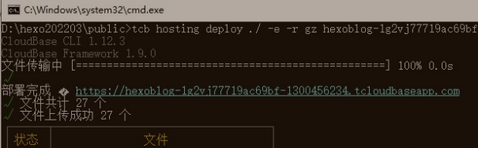
Cocos
分类
国产2D/3D游戏开发引擎
推荐语
Cocos2d是一套成熟的开源跨平台游戏开发框架。引擎提供了图形渲染、GUI、音频、网络、物理、用户输入等丰富的功能， 被广泛应用于游戏开发及交互式应用的构建。其核心采用 C++ 编写，支持使用 C++、Lua 或 JavaScript 进行开发。
工作运用：Cocos Creator工具
Cocos Creator 是一个完整的游戏开发解决方案，包含了 cocos2d-x 引擎的 JavaScript
实现，以及快速开发游戏所需求的各种图形界面东西
在 Dashboard 中，打开 【新建项目】 选项卡，选中 Hello World 项目模板。
然后会在下面的项目路径栏中指定一个新项目即将被创建的位置，路径的最后一部分就是项目文件夹。
填好路径后点击右下角的 新建项目 按钮，就会自动以 Hello World 项目模板创建项目并打开。
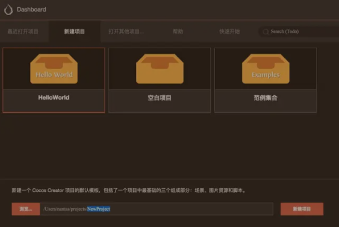
打开 helloworld 场景后，就可以看到这个模板项目中的全部内容了。
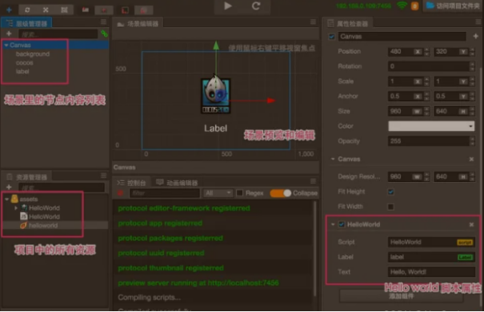
场景中的内容会按照工作流分别呈现在 资源管理器、层级管理器、场景编辑器、属性检查器 四个核心面板中。
UE4
分类
2D/3D游戏引擎，采用C++编程
推荐语
虚拟引擎4是由EpicGames公司推出的一款游戏开发引擎，虚幻引擎4不仅高效、全能，而且可以直接预览开发效果，赋予开发者更强的能力。
工作运用：蓝图
蓝图是一种特殊的asset类型，它可以创建逻辑，以直观的、基于节点的方式来设置变量数据。规划可以创建自定义角色、事件、功能等，并且快速地完成Gameplay迭代，无需编写任何代码。
设计蓝图还可以继承C++类、C++中定义的变量、在C++中调用函数或在C++中实现事件。